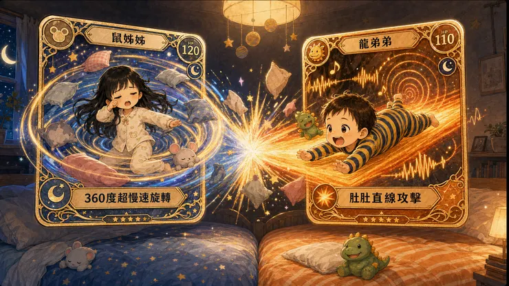

「春天不是讀書天，夏日炎炎正好眠」，鼠媽媽最近有跑不完的模型和報告，假日晚上她還得打開電腦加班。鼠姊姊看見媽媽工作，也會拿著平板坐在旁邊，一大一小並肩盯著螢幕，神情同樣專注。鼠媽媽真的在趕報告；鼠姊姊則是忙著裝忙。等鼠媽媽終於闔上電腦，家裡的另一份夜班工作才正要開始——收服兩隻不肯睡的神奇寶貝。

早睡計畫總是趕不上變化 21點上床變成上床玩耍
當初鼠姊姊自己一間房時有和雞爸爸約定，晚上九點上床、九點半關燈，就可以聽故事。這只是一個口頭約定，沒有寫在紙上，也沒有簽名蓋章。不過隨著鼠姊姊開始一週兩次的眼睛點穴，實際回到家的時間早就超過九點半，讓這個政策只能名存實亡。因為即便能夠九點上床的那幾天，也不等於九點能睡覺，只代表遊戲地點從客廳移到床上。
隨著一歲半的龍弟弟加入戰局，執行起來更是愈加困難。鼠姊姊在床上跳跳，龍弟弟也跟著跳跳跳；鼠姊姊搖著大屁屁，龍弟弟也搖著小屁屁。姐姐一往弟弟身上靠，弟弟立刻笑著靠回去。兩個人一下子滾成一團，一下抱怨被弟弟咬了，一下子又站起來繼續玩。雞爸爸看著看著，雖然環境很嘈雜，心境卻也有種說不出口的療癒。小朋友真好，沒有什麼複雜的心事睡不著，單純就是想玩，不想結束這一天。
巔峰對決賽制 現在進入二對二團體賽
之前雞爸爸一直都是和鼠姊姊PK，費神的是半夜要和鼠媽媽輪班，輪流在兩間房跑堂；現在恢復睡在兩張雙人床，變成夫妻一起進房，聯手收服鼠姊姊和龍弟弟。以前是1V1，現在是2V2。人數看似公平，問題是這兩隻神奇寶貝會互相充電，當一隻快安靜下來，只要另一隻笑了一聲，馬上又恢復精神。反觀雞爸爸和鼠媽媽，只會隨著時間愈來愈沒電。鼠媽媽最近工作很累，忙了一整天，常常孩子還沒睡，自己就先累到閉上眼睛。
原本的二對二團體戰，也瞬間只剩雞爸爸一個獨木。不過，鼠媽媽先睡著並不代表比較輕鬆。龍弟弟雖然還不太會說話，想喝ㄋㄋ時的態度卻十分堅定。媽媽才剛睡著，他就開始吵著要喝；鼠姊姊看到弟弟靠近媽媽，也立刻要求媽媽睡在她旁邊。一個吼著要ㄋㄋ，一個哭哭要睡媽媽旁邊。鼠媽媽只有一位，需求卻同時湧入。雞爸爸明明也在旁邊，這時常覺得自己只是陪睡現場的工作人員。

二回戰：睡著後 鼠姊姊三百六十度迴轉半徑 VS 龍弟弟肚肚攻擊
兩張雙人床聽起來很寬敞，實際上卻很難制定「床位政策」。因為家裡的兩隻神奇寶貝不只會移動，還會旋轉、攻擊，並在受到攻擊後發出足以喚醒全家的叫聲。當鼠姊姊終於玩累、躺下準備睡覺時，故事並沒有就此結束。隨著睡眠進度逐漸加深，她的身體也會開始進行三百六十度超慢速旋轉。
起初，頭還好好地放在枕頭上；過了一會兒，身體轉成橫向；再過一下，雙腳已經出現在雞爸爸面前。她就像一支掃描整張床鋪的雷達，以自己為圓心，緩慢旋轉並持續擴大影響範圍。鼠姊姊使用技能：「三百六十度超慢速旋轉！」
另一邊，睡不著的龍弟弟也沒有閒著。他會在床上爬來爬去，鎖定目標後挺著圓滾滾的肚肚向前推進。龍弟弟使用技能：「肚肚直線攻擊！」
最危險的時刻，就是龍弟弟主動闖入鼠姊姊的迴轉半徑。只要龍弟弟的肚肚壓到鼠姊姊，或鼠姊姊翻身時不小心掃到龍弟弟，兩項技能便會在兩張床的交界處正面碰撞。
原本即將安靜的房間，瞬間又是一場腥風血雨。

肚肚突擊系的龍弟弟受到攻擊，立刻反擊；睡眠旋轉系的鼠姊姊睡到一半被壓醒，也不可能保持沉默。兩隻神奇寶貝同時解除睡眠狀態，體力恢復滿格，叫聲攻擊隨即發動。
雞爸爸或鼠媽媽只能再次進場，把兩位對戰選手分開，然後從頭開始陪睡。兩張雙人床明明很大，他們卻總能在最關鍵的時刻，精準找到對方，進入彼此的攻擊範圍。
看來真正需要加大的，可能不是床，而是兩隻神奇寶貝之間的安全距離。
起床看到兩個小天使 果然孩子還是睡著時最可愛
晚上玩得如此精彩，早上當然一個比一個叫不醒。鼠姊姊眼睛整個黏起來睜不開，龍弟弟整個身體大字型攤開，這兩個小天使都這麼可愛，昨晚大鬧天宮的肯定另有其人。
但上班和上學不能等，雞爸爸每天都公主抱抱起鼠姊姊去刷牙洗臉吃早餐，至於龍弟弟則是出門整隻抱起來，直接送上車，從床鋪到車上全程不必完全清醒，享有雞爸爸家最尊榮接送服務。電梯裡鄰居看著我懷裡熟睡的龍弟弟都說：「很棒，昨天一定玩得很開心！」
春天是不是讀書天，雞爸爸不知道。夏日炎炎，確實正好眠。只可惜，鼠姊姊和龍弟弟每天都認為，那是隔天早上才要做的事．．．